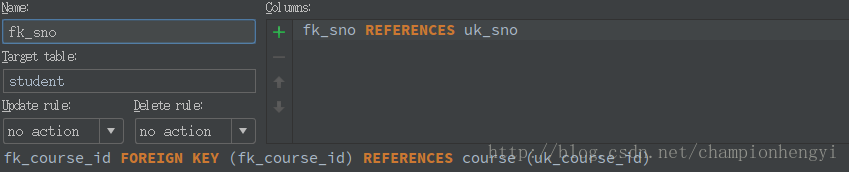

什么是主键、外键
关系型数据库中的一条记录中有若干个属性，若其中某一个属性组(注意是组)能唯一标识一条记录，该属性组就可以成为一个主键。
比如：
学生表(学号，姓名，性别，班级)
其中每个学生的学号是唯一的，学号就是一个主键
课程表(课程编号,课程名,学分)
其中课程编号是唯一的,课程编号就是一个主键
成绩表(学号,课程号,成绩)
成绩表中单一一个属性无法唯一标识一条记录，学号和课程号的组合才可以唯一标识一条记录，所以学号和课程号的属性组是一个主键
成绩表中的学号不是成绩表的主键，但它和学生表中的学号相对应，并且学生表中的学号是学生表的主键，则称成绩表中的学号是学生表的外键。
同理：成绩表中的课程号是课程表的外键。
定义主键和外键主要是为了维护关系数据库的完整性，总结一下：
- 主键是能确定一条记录的唯一标识，比如，一条记录包括身份正号，姓名，年龄。身份证号是唯一能确定你这个人的，其他都可能有重复，所以，身份证号是主键。
- 外键用于与另一张表的关联。是能确定另一张表记录的字段，用于保持数据的一致性。比如，A表中的一个字段，是B表的主键，那他就可以是A表的外键。
主键、外键和索引的区别
| 主键 | 外键 | 索引 | |
|---|---|---|---|
| 定义 | 唯一标识一条记录，不能有重复的，不允许为NULL | 表的外键是另一表的主键, 外键可以有重复的, 可以是NULL | 没有重复值，可以为NULL(会使索引无效) |
| 作用 | 用来保证数据完整性 | 用来和其他表建立联系用的 | 提高查询排序的速度 |
| 个数 | 主键只能有一个 | 一个表可以有多个外键 | 一个表可以有多个惟一索引 |
外键约束
在上面“什么是主键、外键” 一小节中，我给大家灌输的思维是，学生表使用学号作为主键，课程表使用课程ID作为主键，成绩表使用学号、课程ID作为联合主键（联合主键（使用组合索引进行替代）以后压根就别用，主键的设计原则就是字段数目越少越好），这样就产成了一个问题，外键的参考键必须是另一个表的主键吗？
答案当然不是，但是参考键必须是唯一性索引。主键约束和唯一性约束都是唯一性索引。
错误的设计方式—[1215] Cannot add foreign key constraint
出现这种问题的原因一般有两个：
- 两张表里要设主键和外键的字段的数据类型或者数据长度不一样。
- 某个表里已经有记录了。
我当时属于第一个。
如何设计良好的数据库主键
摘抄一位知乎用户的回答：知乎链接—纪路
主键的话我的建议是自增整形，不要使用与业务相关的名字，仅用id即可，而效率问题都可以用索引来解决。因为主键的不可变的特性，如果选择不慎，会在未来产生难以预期的问题。比如你用int型做文章的id，但是如果在未来某一天文章数超过了无符号整形的最大值，你将没法将主键修改成bigint。或者为了给用户起一个唯一id用了自增主键，但是如果未来有其他的项目用户要合并进来，他也是这么做的。这时候为了区分不同的项目可能要在这个用户id前加一个前缀，这时候也没法修改主键的值。主键之所以叫做主键就是到什么时候都不能改，所以最好的方案就是使用自增数字id做主键，并且不要给这个主键赋予一个业务相关的意义。
总结上面前辈的一句话就是，不要将表中与业务相关的字段设置为主键，即使它可以唯一标识这一行，比如身份证号，学号等等，主键越没有意义，说明主键设置的越好。
主键、外键的使用
创建表
就按照我们上面的例子来建立三张表吧：student、course、score表。
创建student表：
1 | create table student |
创建course表：
1 | create table course |
创建score表：
1 | create table score |
值得一说的是，创建外键的时候也会自动创建普通索引，所以fk_sno、fk_course_id其实是两个普通索引的名称。
对于使用IDEA的同学，我们会发现在设置外键的时候还有Update rule 和 Delete rule规则，对于这两个选项的解释，我们下面再说。

外键的使用–更新与删除
表已经建立成功，现在我们插入数据：
student表：
1 | INSERT INTO student(uk_sno, name, sex, class) VALUES(123456, "spider_hgyi", "male", "cs"); |
crouse表：
1 | INSERT INTO course(uk_course_id, course_name, credit) VALUES(1, "csapp", 10); |
score表：
1 | INSERT INTO score(fk_sno, fk_course_id, result) VALUES(123456, 1, 100); |
好了，现在三个表里都已经有了数据，现在我们尝试更新学生表中学号的信息：
1 | UPDATE student SET uk_sno=12345678 WHERE uk_sno=123456; |
MySQL报错：
1 | (1451, 'Cannot delete or update a parent row: a foreign key constraint fails (`bookmanager`.`score`, CONSTRAINT `fk_sno` FOREIGN KEY (`fk_sno`) REFERENCES `student` (`uk_sno`))') |
看看错误告诉我们什么：不能删除或更新这一行，存在外键约束，score表中的fk_sno列是当前要更新的uk_sno的外键，也就是说，你要更新学生表中的学号，但是成绩表中的学号是你的外键，你不能不管它呀，删除也是同理。
要怎么解决？
还记得刚才我贴的那张IDEA的图片吗？那两个规则就可以帮助我们解决这个问题。
级联删除与更新
我们在更新与删除时遇到的外键约束解决方案分别对应设置Update rule与Delete rule。有如下四个选项：
- CASCADE：从父表删除或更新且自动删除或更新子表中匹配的行。
- SET NULL：从父表删除或更新行，并设置子表中的外键列为NULL。如果使用该选项，必须保证子表列没有指定NOT NULL。
- RESTRICT：拒绝对父表的删除或更新操作。
- NO ACTION：标准SQL的关键字，在MySQL中与RESTRICT相同。
可以看到我在创建外键的时候选择的是NO ACTION，也就是第四个选项。我们只需要选择CASCADE就可以啦。具体效果就不进行演示了。
如果你不用IDEA也没关系，接下来我给出SQL语句的实现（重新创建score表）：
1 | create table score |
补充
博主在学习阿里的Java开发手册时，他们对于外键与级联是这样描述的：
【强制】不得使用外键与级联,一切外键概念必须在应用层解决。
说明：以学生和成绩的关系为例,学生表中的 student _ id 是主键,那么成绩表中的 student _ id则为外键。如果更新学生表中的 student _ id ,同时触发成绩表中的 student _ id 更新,即为级联更新。外键与级联更新适用于单机低并发,不适合分布式、高并发集群 ; 级联更新是强阻塞,存在数据库更新风暴的风险;外键影响数据库的插入速度。
本来我是打算以后在脑海中抛弃外键与级联这部分知识的，但经过学长的敲打，不得不说我对阿里的盲目崇拜。
外键约束、级联更新与删除对于开发者是非常有用的，它确保了数据删除与更新的完整性。至于阿里所说的影响性能，学长反问我：“你的应用有多少人在用？阿里的应用有多少人在用？”。
说这这些话的原因也是这次提醒我在软件开发的过程中应想好受众的大小，灵活运用所学的知识，不能盲目追求课本以及参考资料。
参考阅读
阿里巴巴Java开发手册–MySQL数据库